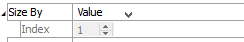
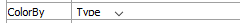
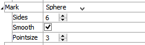
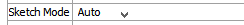
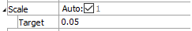

标量
说明
用户定义的标量数据。
属性
大小依据

指定该项的大小确定方式。
大小依据：设置确定该项大小的方法。可用选项为“数值”、“附加”、“统一”或“像素”。若选择“附加”，将添加一个 索引 字段，用于指定附加变量的索引。若选择“像素”，将添加一个 像素 字段，用于指定要使用的像素数量。
按…着色

设置用于为标量着色的特性。
按…着色：将着色方式设置为“标签”或“等值线”。
若 按…着色 设置为“标签”，则提供 标签 属性，用于选择“统一”、“数值”、“分组”或“附加”。此外还提供标准的 颜色列表 属性（参见 标签 绘图项中的 颜色列表（Color-List））。
若 按…着色 设置为“等值线”，则提供 数值 属性，用于选择“数值”或“附加”。此外还提供标准的 等值线 属性（参见 颗粒轨迹 绘图项中的 等值线（contour））。
标记

设置用于渲染绘图项的形状。
标记：从以下选项中设置项目形状：“点”、“立方体”、“菱形”、“棱锥”、“沙漏”、“十字”、“球体”。
草图模式

指定何时使用草图模式。
比例

设置绘图项的大小。
比例：自动（勾选）缩放绘图项。目标 字段指定目标缩放比例（以屏幕大小的百分比表示）。若未勾选，可使用编辑字段手动缩放该项。
若 大小依据 属性设置为“像素”，则此属性不可用。
颜色列表

配置用于为绘图项着色的列表。
颜色列表：设置列表中的哪些项被显示。该字段依次包含“全不选”、“全选”和“反选”按钮。其后是“全局”复选框，若勾选，则当前的颜色与标签配对将在所有绘图中全局使用。例如，如果希望为所有绘图中出现的分组名称使用某个特定且一致的颜色，此设置将很有用。
此字段也是列表中各项的容器。
[项]：当列表包含一个或多个项时，它们会列在主字段下方。项的名称用作该字段的标签。若勾选，则显示该项。接下来会出现一个颜色控件（color control）以设置/指示该项的颜色。随后显示该项的当前标签；初始时默认为项名称。设置按钮（…）可用于设置“别名（alias）”，在图例中显示时可代替项名称。
透明度

设置绘图项的透明度。此设置不适用于二维模型对象。
透明度：为项目应用透明度（勾选时）。开启时，透明度设为默认值 70，并处于“锁定”状态。锁定时，可用的透明度范围被限制在 70（最低，略有透明）到 100（最高，完全不可见）。要访问完整的透明度取值范围（0-100），请按下锁形图标以“解锁”透明度范围；图标会随之改变（
）。
使用帮助按钮可获取有关此特定属性的帮助。
注意
应当提醒用户：低于 70 的值往往“更不透明”得难以察觉，并且可能导致深度透视看起来奇怪或不正确。
图例
设置该项在绘图图例中的显示。所有绘图项至少都具有 标题 属性。
图例：在图例中显示（勾选）有关该绘图项的所有信息。
标题：在图例中显示（勾选）该绘图项的标题。“别名：”字段可用于为该绘图项指定自定义标题。
大小：设置图例中文本的大小。
字体：设置文本所用的字体面。
样式：设置文本样式（选项为常规、粗体、斜体、粗斜体）。
颜色：设置文本颜色。
| 这些内容对您有帮助吗？… 版权与免责声明 |
FLAC3D © 2019, Itasca | 原文更新于 2020 年 10 月 8 日 |